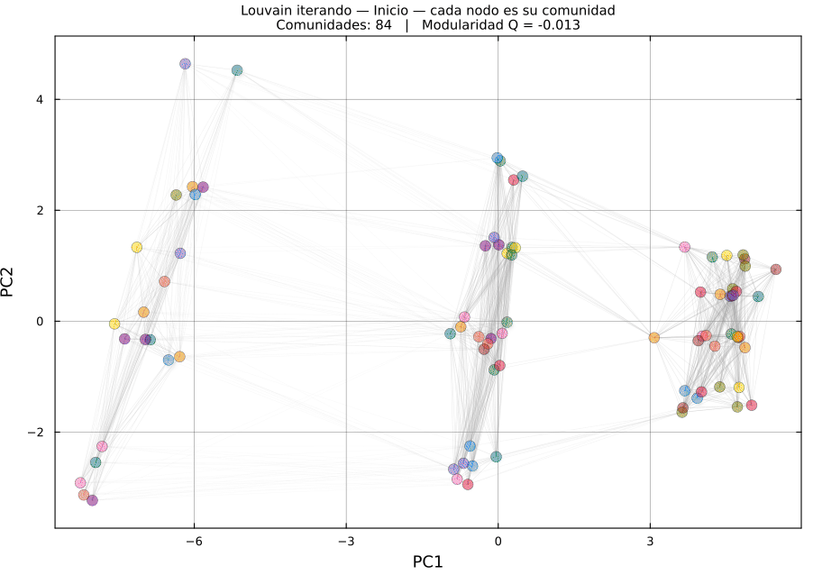

Fase de movimiento local sobre el grafo k-NN · color = comunidad actual · Q sube cada frame
Cada nodo arranca solo. Louvain lo mueve a la comunidad vecina que más sube Q, y los nodos se van fusionando hasta converger.
Q ≈ −0.01
Inicio
84 comunidades — cada actuador es la suya.
Q ↑
Movimiento local
Nodos cercanos se absorben; emergen grupos densos.
Q = 0.555
Convergido
3 comunidades estables — ningún movimiento mejora Q.